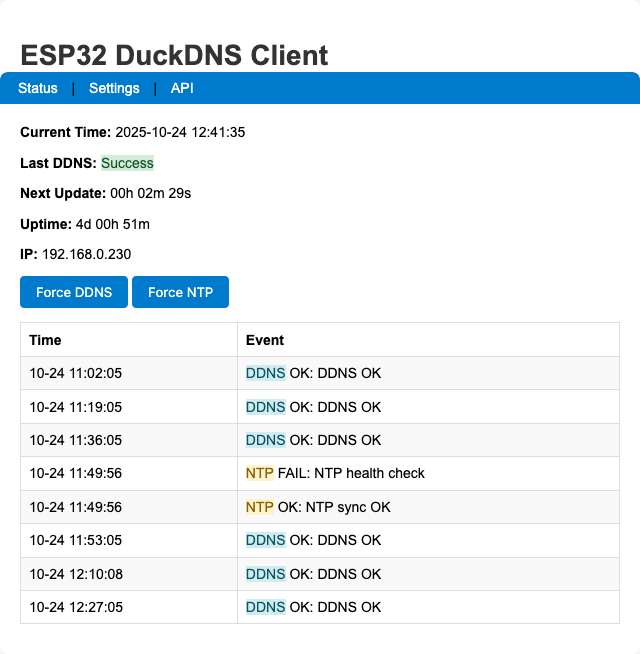
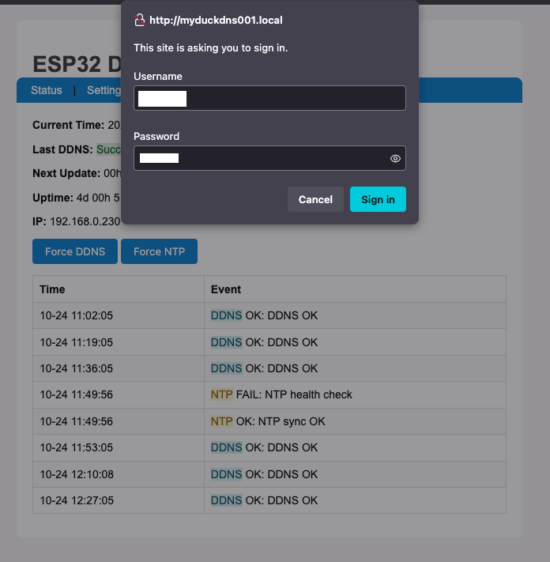
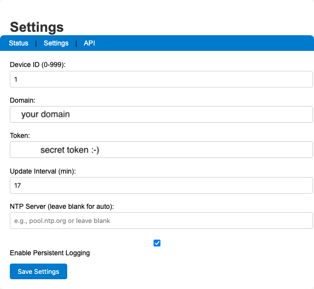
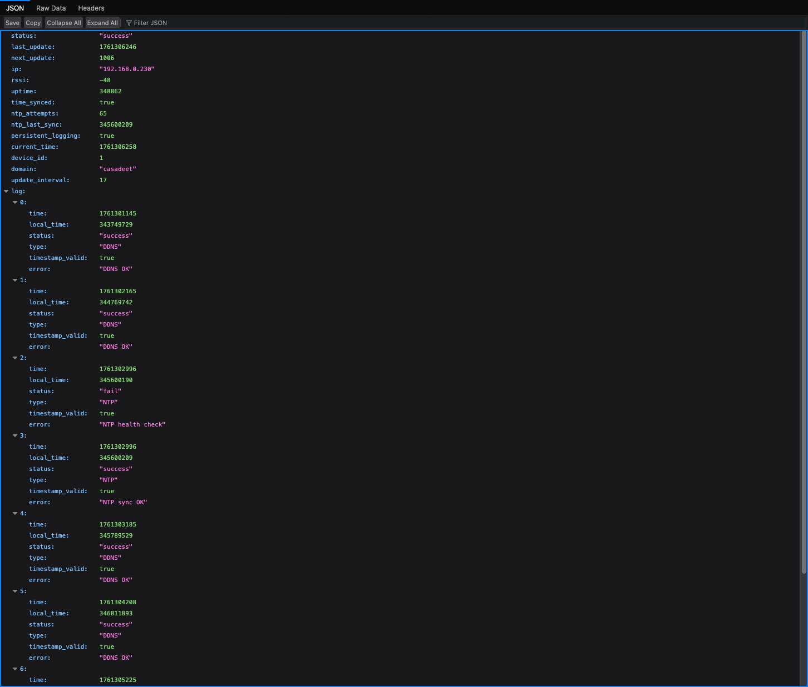

ESP32 DuckDNS Client (Enhanced) 🦆
This project is an open-source, standalone Dynamic DNS (DDNS) client for DuckDNS.org that runs on an ESP32 microcontroller. This enhanced version is a complete overhaul, offering a robust, feature-rich, and secure solution to keep your DuckDNS domain pointed to your home’s dynamic IP address.
License
This project is licensed under the MIT License. See the LICENSE file for details. It was adapted from the original ESP8266 DuckDNS client created by Davide Gironi @davidegironi (https://davidegironi.blogspot.com/2017/02/duck-dns-esp8266-mini-wifi-client.html).
Version with NTP and persistent logging

Configuration Stored in EEPROM
Config fields: * Device ID (0–999) * DuckDNS domain * DuckDNS token * Update interval (minutes) * Optional custom NTP server * Persistent logging flag
EEPROM details: * Size: 512 bytes; init marker 0x10 * Persistent log ring (20 entries) stored after the config block * Batched commits (every 30s or on critical failure) to reduce wear
Defaults on first boot: * deviceid = 1, domain = "your-domain", token = "your-token", updateinterval = 10, ntpServer = "time.local", persistentLogging = false
Security Notes
- Settings page protected with HTTP Basic Auth
- Defaults:
user/pass - Change in code:
ADMIN_USERNAME/ADMIN_PASSWORD
- Defaults:
- HTTPS to DuckDNS uses
setInsecure()(no cert validation). For strict TLS, add certificate pinning toWiFiClientSecure.
LED Status
GPIO 2 is used for status LEDs: * WiFiManager AP mode: fast blink * WiFi connecting: slow blink * WiFi connected: steady on * DDNS failure: DDNS LED blinks until next success
Troubleshooting
- If NTP fails at boot, the system proceeds after ~2 minutes and retries via health checks (every 30 minutes).
- Ensure DuckDNS domain and token are correct on the Settings page.
- If mDNS (
.local) doesn’t resolve, use the device IP. - Use the Serial Monitor for detailed logs (baud 115200).
Changelog (v6)
- Reduced EEPROM data sizes; total EEPROM size = 512 bytes
- Optional persistent logging to EEPROM with batched commits (30s or on critical failure)
- In-memory log ring (8 entries) and timestamp backfill after NTP sync
- NTP multi-server fallback and periodic health checks
- Memory pressure monitoring with defensive restart on very low heap
- Safer string handling and bounded buffers
- Simplified web UI and handlers; Basic Auth on Settings page
- Hostname derived from device ID:
testduckNNN### 2. Software & Libraries
- Make sure you have the Arduino IDE installed with the ESP32 board support package.
- Install the following libraries through the Arduino Library Manager (
Sketch>Include Library>Manage Libraries...):WiFiManagerby tzapuTickerby sstaub
3. Flashing the Code
- Open
firmware/esp32duckdns_v6.inoin the Arduino IDE or a compatible editor like VS Code. - Select your ESP32 board from the
Tools>Boardmenu. - Select the correct COM port under the
Tools>Portmenu. - Click the “Upload” button.
How to Use
First-Time WiFi Setup
The first time you power on the ESP32, it will automatically enter configuration mode.
- Using your phone or computer, scan for new Wi-Fi networks.
- Connect to the network named
ESP32-DuckDNS. - A captive portal page should automatically open in your browser. If not, open a browser and navigate to
192.168.4.1. - Click on “Configure WiFi”, select your home network (SSID), and enter its password.
- Click “Save”. The ESP32 will save the credentials, reboot, and automatically connect to your home network.
Device Configuration


Once the device is connected to your network, you need to configure it.
- Find the device’s IP address by:
- Checking the “Connected Devices” list on your router’s admin page. The hostname will be
testduckXXX(whereXXXis the Device ID). - Monitoring the Serial Output in the Arduino IDE when the device boots up.
- Checking the “Connected Devices” list on your router’s admin page. The hostname will be
- Open a web browser and enter the ESP32’s IP address.
- You’ll see the status page. Click the “Settings” link.
- You will be prompted for a username and password. Enter the defaults:
- Username:
user(these are configurable within the first 20 lines of code) - Password:
pass
- Username:
- On the settings page, you can configure:
- DuckDNS Domain and Token
- Update Interval (minutes)
- NTP Server (optional; falls back to built-in servers)
- Persistent Logging toggle
- Device ID (used for hostname
testduckNNN)
- Click “Save Settings”. The device will save your settings and reboot.
That’s it! The ESP32 is now fully configured.
Home Assistant Integration
/— Status page (no authentication)/settings— Settings page (Basic Auth:user/pass)/forcesync— Force DDNS update (302 redirect to/)/forcentp— Force NTP sync (302 redirect to/)

{
"status": "success",
"last_update": 1754857330,
"next_update": 458,
"ip": "192.168.0.7",
"rssi": -54,
"uptime": 142,
"time_synced": true,
"ntp_attempts": 1,
"ntp_last_sync": 23000,
"persistent_logging": true,
"log": [
{
"time": 1754857211,
"local_time": 21345,
"status": "success",
"type": "SYS",
"timestamp_valid": true,
"error": "Web server started on port 80"
},
{
"time": 1754857330,
"local_time": 140123,
"status": "success",
"type": "DDNS",
"timestamp_valid": true,
"error": "DDNS update successful"
}
]
}